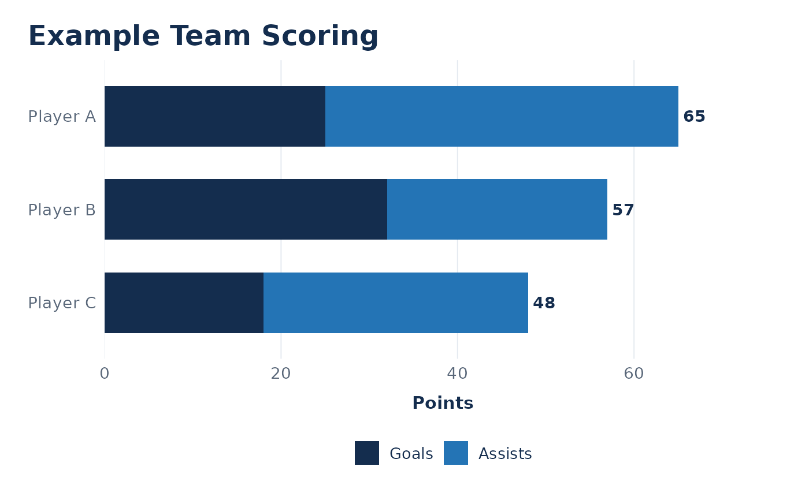
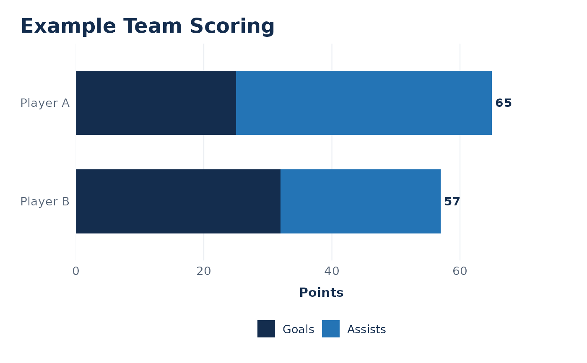

Compare players on one team using stacked goals and assists. Defaults match the column names returned by OHLpkg.
Usage
plot_team_scoring(
data,
team = NULL,
n = 10,
player_col = "Name",
team_col = "Team",
goals_col = "G",
assists_col = "A",
title = NULL,
subtitle = NULL,
caption = NULL,
goals_colour = "#142D4E",
assists_colour = "#2474B5"
)Arguments
- data
A data frame with one row per player for one season. Goals and assists must cover the same reporting scope.
- team
Team name to select. If
NULL, the data must contain exactly one team.- n
Maximum number of players to display. Defaults to 10.
- player_col
Name of the player-name column.
- team_col
Name of the team column.
- goals_col
Name of the numeric goals column.
- assists_col
Name of the numeric assists column.
- title
Chart title. If
NULL, uses the selected team name.- subtitle
Optional chart subtitle.
- caption
Optional chart caption.
- goals_colour
Fill colour for goals.
- assists_colour
Fill colour for assists.
Details
Players are ranked by goals plus assists, from highest to lowest. Ties preserve input row order. Rows with missing or non-finite goals or assists are omitted with a warning.
Goals and assists must be non-negative whole numbers. Duplicate player names within the selected team are rejected: resolve duplicate records or supply unique player labels first.
Selecting a team filters rows; it does not convert season totals into statistics earned only with that team. Supply team-specific statistics when that distinction matters.
Examples
players <- data.frame(
Name = c("Player A", "Player B", "Player C"),
Team = rep("Example Team", 3),
G = c(25, 32, 18),
A = c(40, 25, 30)
)
plot_team_scoring(players)

plot_team_scoring(players, team = "Example Team", n = 2)
